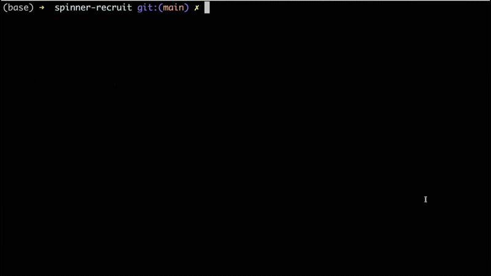
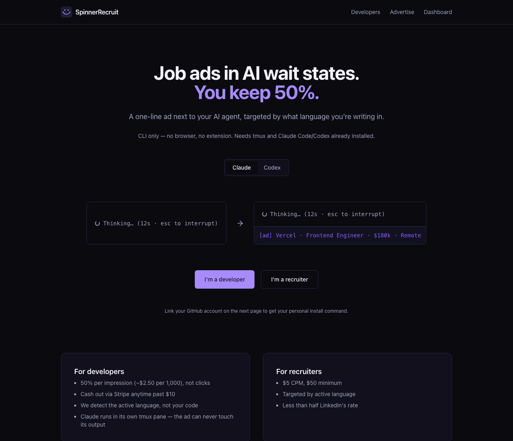
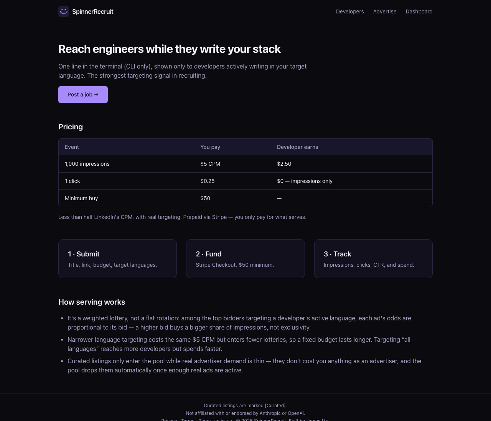
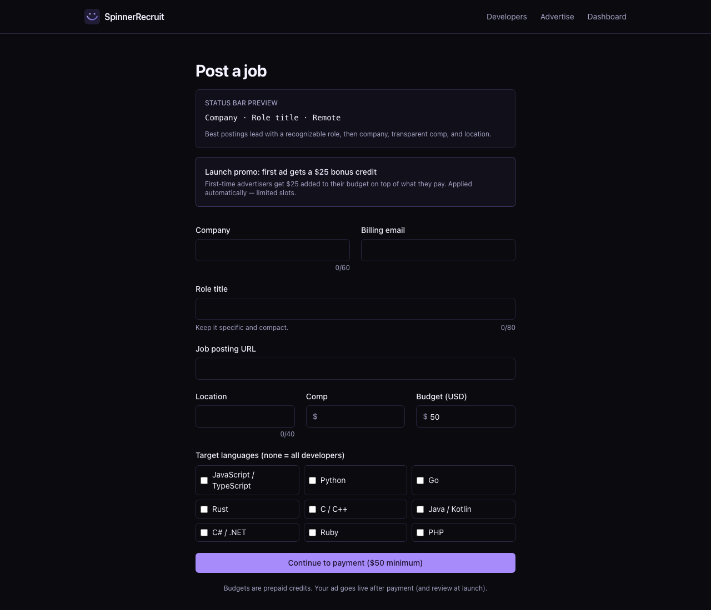
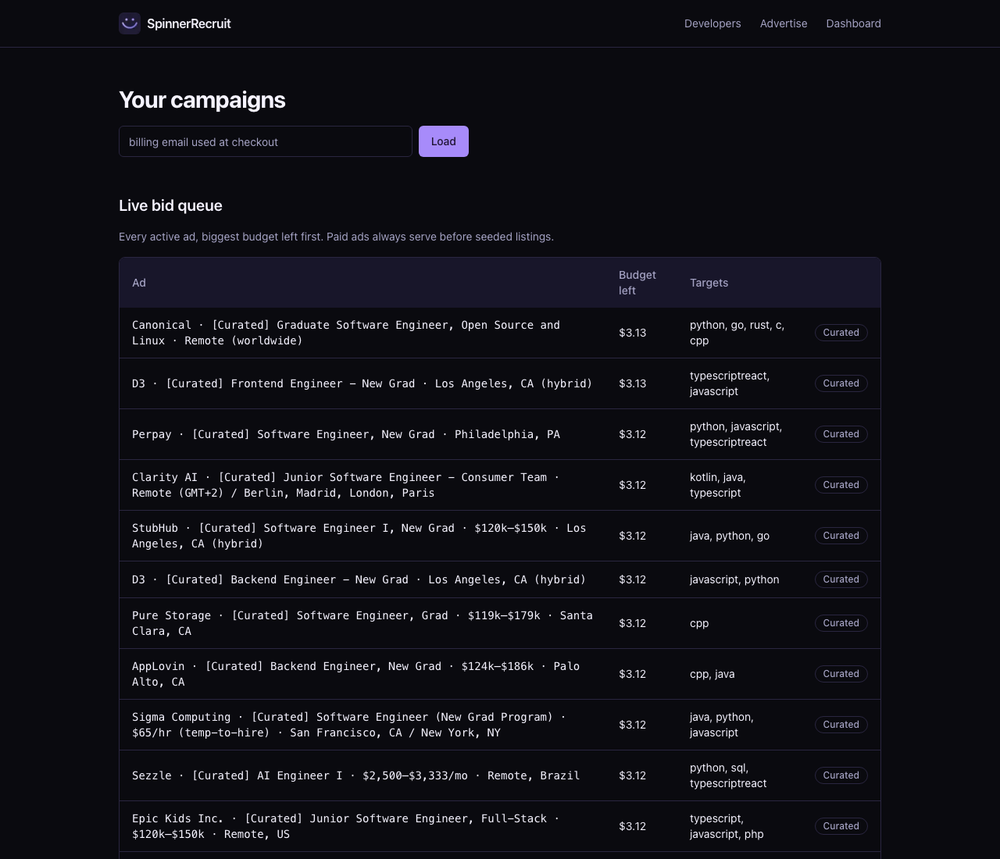
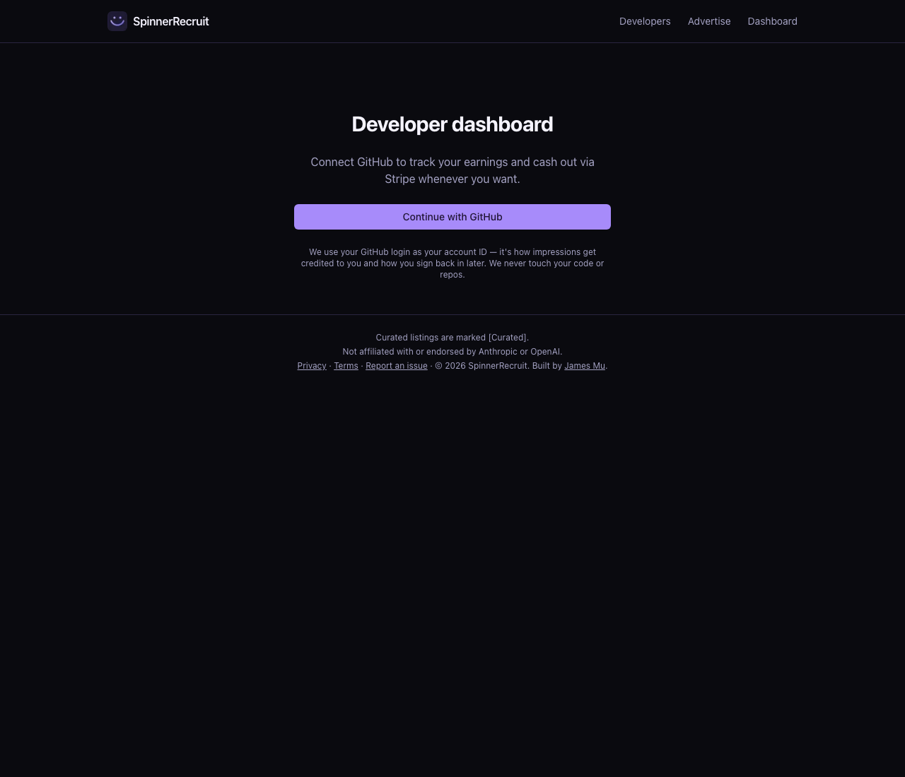

Job ads in AI wait states.
Developers kept 50%.
A one-line job ad that appeared next to Claude Code or Codex while the agent was thinking, targeted by the language you were writing in.
This project is retired. Ad serving, sign-ups, payments and payouts are switched off. This page is a record of what was built.

The idea
Coding agents leave developers waiting for seconds or minutes at a time, dozens of times a day. SpinnerRecruit put one relevant job listing in that gap. Recruiters paid per impression, and the developer whose terminal showed the ad kept half.
For developers
- 50% of impression revenue, about $2.50 per 1,000
- Cash out through Stripe once past $10
- Only the active language was detected, never the code
- The agent ran in its own tmux pane, so the ad could not touch its output
For recruiters
- $5 CPM, $50 minimum, prepaid
- Shown only to developers writing in the target languages
- Self-serve: submit, fund, track impressions and clicks
What was built
Four pieces, built and shipped over about two weeks in June 2026.
The CLI
npx spinner-recruit claude ran the agent in one tmux pane and a two-line ad renderer in another. It watched for the "thinking" marker, fetched an ad, made it clickable, and kept a local log of every ad shown.
Ad serving and billing
Serve tokens, impression and click billing, per-session and per-IP rate caps, an ad review queue, Stripe Checkout for advertisers and Stripe Connect payouts for developers.
Dashboards
A landing page, a developer dashboard with GitHub login and earnings, a recruiter flow with a live bid queue, and an admin view for approving ads.
The ledger
Seven migrations: atomic billing functions, earnings views, row-level security, idempotent payout records and a GDPR self-erasure routine.
How the money moved
The whole loop was tested end to end with real payments, including a real payout.
- A recruiter submitted an ad and paid through Stripe Checkout. A webhook credited the ad's prepaid budget and sent it to review.
- A developer ran their agent through the CLI. When the agent started thinking, the ad pane asked the API for an ad.
- The API picked an ad by weighted lottery among the top bidders targeting the developer's language, and issued a one-time serve token.
- After five seconds on screen the CLI reported the impression. The advertiser was billed and the developer credited half.
- A click went through a redirect that billed the advertiser. Developers earned nothing on clicks, which removed any reason to click their own ads.
- Past $10, the developer cashed out to their bank through a Stripe Connect transfer.
Engineering notes
The decisions that took the most work to get right.
tmux instead of terminal tricks
The first CLI reserved a terminal row for the ad by reporting the agent a shorter screen. It corrupted the agent's display in real use. Running the agent and the ad in separate tmux panes made interference impossible instead of unlikely.
Clients never name what they bill
The API pinned the ad, session and developer to a serve token when it handed out an ad. A tampered client could only create rate-capped serves, never forge an impression for someone else.
Money as integer micros
Every amount was a 64-bit integer where $1 is 1,000,000, so half of a $0.005 impression stayed exact. Dollars appeared only at the Stripe boundary.
Payouts that cannot double-pay
Stripe events were de-duplicated in a table, a unique index allowed one in-flight payout per developer, and each transfer carried its payout ID as an idempotency key.
A lottery, not an auction
A higher bid bought a larger share of impressions rather than exclusivity, so developers kept seeing variety and small advertisers still got served.
A pivot in week one
It launched as a VS Code extension. Three days later it was rebuilt as a CLI so it worked in any terminal, with no marketplace review and no editor API in the way.
Screens
Captured from the live site before it was taken down.










Timeline
- First commit.
- VS Code extension published; web and API live.
- Rebuilt as a tmux-based CLI after the row-stealing approach broke the agent's display.
- CLI source made public. Full money loop tested with real payments, including a $10 payout.
- CLI 0.4.0 on npm: plain-click ad links and a local ad log.
- Last feature work: curated listings, review notifications, bid queue.
- Retired. Backend shut down; the CLI's final release runs the wrapped command directly with no ads and no network calls.